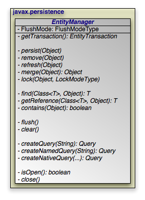

2.8. EntityManager

The diagram above presents an overview of the EntityManager interface.
For a complete treatment of the EntityManager API, see the
Javadoc documentation.
Methods whose parameter signatures consist of an ellipsis (…) are overloaded to take multiple parameter types.
|
|
OpenJPA extends the standard |
The EntityManager is the primary interface used by application developers to interact with the JPA runtime.
The methods of the EntityManager can be divided into the following functional categories:
-
Transactionassociation. -
Entity lifecycle management.
-
Entity identity management.
-
Cache management.
-
Queryfactory. -
Entity locking.
-
Closing.